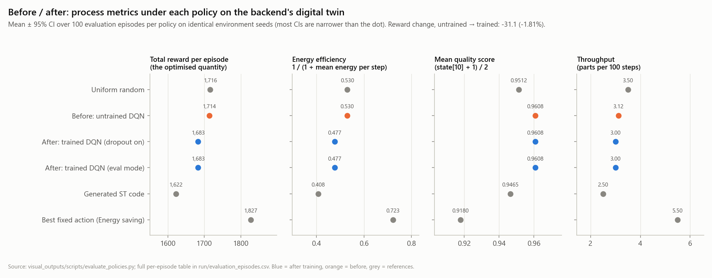
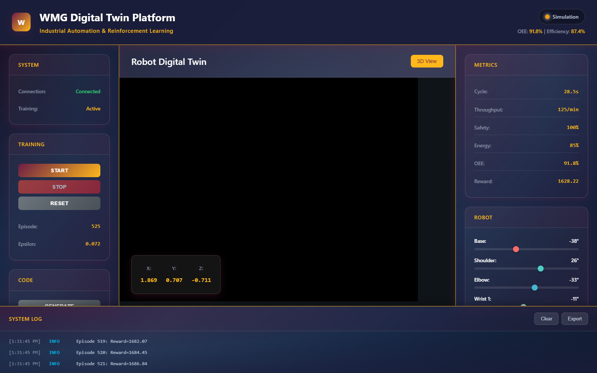

RL Digital Twin and PLC Code Generator: Technical Assessment
The repository was installed in a new Python 3.11 environment and executed end to end: training through the backend REST API, then PLC code generation from the trained policy. It was assessed against the descriptions given in its docstrings, user interface and dependency list; the README file is empty.
Implemented and verified
- worksREST endpoints and a WebSocket channel are served by the FastAPI backend. 1,000 training episodes (200,000 simulation steps) were completed in 189 s, with one progress and one metrics message broadcast per episode.
- worksA PyTorch DQN is implemented (Q-network 12-128-128-128-6, target network, replay buffer, ε-greedy exploration). Training is completed without errors on CPU.
- worksA 290-line IEC 61131-3 Structured Text file is generated and stored on request.
- worksAll 34 pinned dependencies are installed on Python 3.11 without resolver conflicts.
Stubbed or missing
- frontendThree script files written as ES modules are loaded as classic scripts, and an undefined method is called during 3D set-up, so initialisation is stopped before any control is wired. Fixed demonstration values are displayed (OEE 91.8%, episode 525), the 3D view is left black and no backend data is shown.
- twinThe simulated process is a 12-variable stochastic model with no link to a plant, PLC, OPC UA server or the 3D robot model. An 18-state, 8-action environment is present in the code but not imported.
- policy to codeOnly two values from training (exploration rate and step count) are written into the generated file; the network weights are not used. Fixed coefficients are held in the block named RL optimiser, and the "Aggressive" setpoint is selected in every state: 0% agreement with the trained network.
- IEC 61499No event interface, ECC or .fbt output is produced. Function blocks are declared inside the PROGRAM, so the file is not compilable as one unit; restructuring is required before import into EAE or TIA Portal. Sensor reads are commented out, so a permanent stop is held by the safety block until I/O is mapped.
- otherOPC UA, Modbus, authentication and task-queue packages are listed but not imported. No test is defined (both test files are empty). The pinned PyTorch build is CPU-only, so the RTX 1000 Ada GPU is not used.
Training results
| Policy (default configuration) | Reward / episode | Energy eff. | Actions selected |
|---|---|---|---|
| Untrained network (before) | 1,713.7 | 0.530 | Balanced 63%, Quality focus 37% |
| Trained network (after) | 1,682.6 | 0.477 | Quality focus 100% |
| Generated ST code | 1,622.0 | 0.408 | Aggressive 100% |
| Fixed "Energy saving" action | 1,827.4 | 0.723 | Energy saving 100% |
Mean of 100 evaluation episodes per policy on identical seeds; 95% intervals are below ±2. The episode reward was reduced by 1.8% through training. Across six seeds, one action was selected by each trained policy in every state, and that action changed with the seed; a mean reward of 1,682.8 was obtained, against 1,716.0 for uniform random actions, and the reward-maximising action was not found in any seed. An increase in temporal difference loss from 72 to 7,847 was observed, with one gradient step taken per 200 simulation steps.
Relation to the VueOne and EAE work
- Process setpoint selection is addressed by this repository; control structure (VueOne component states, sequences and interlocks injected into CAT templates for EAE) is addressed by the OSDA Mapper.
- An integration point is identified: a trained policy can be packaged as an IEC 61499 Basic FB (REQ and CNF events, an ST algorithm holding the network weights) that supplies setpoints to CAT-based component logic, while interlocks remain enforced by the Mapper-generated layer.
- The same pattern as CAT injection is followed by
plc_generator.py, without an IEC 61499 schema, a source model or validation.
Three next improvements
- Policy in the code. The trained weights are to be exported into an IEC 61499 Basic FB (.fbt) with constant arrays and an ST forward pass, verified by replaying recorded states through the network and an ST emulation; acceptance criterion: 100% action agreement.
- Twin that matches the rig. Training is to be run against the Visual Components virtual commissioning model through OPC UA, with states taken from real component signals and VueOne interlocks applied as action masks, so that learned behaviour transfers to the SMC rig.
- Learning that beats baselines. One gradient step per simulation step, a reward defined from observable state, checkpointing, loss logging and unit tests are to be added, and a policy is to be accepted only when the best fixed action is exceeded. For low-dimensional setpoint tuning, Bayesian optimisation is to be evaluated; about 500 experiments on a physical testbed were reported for it in the GPU-accelerated control hardware article (University of Stuttgart, 2021).




01 reward curve · 02 loss · 03 ε decay 04 action distribution · 06 twin state · 07 code structure